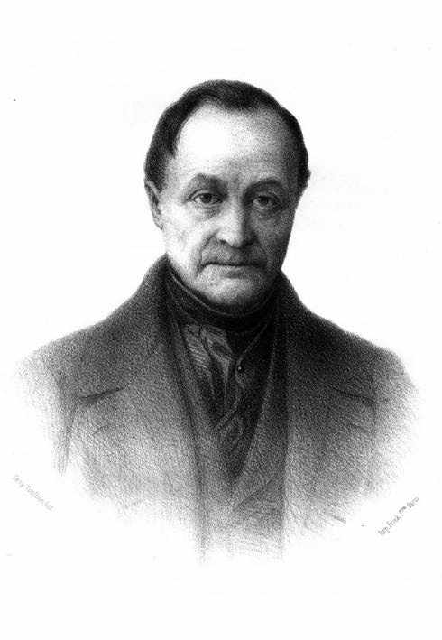
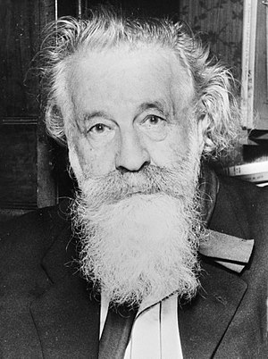
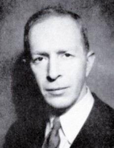
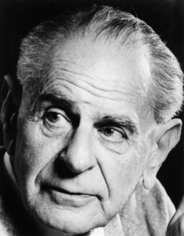
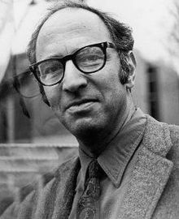

<!DOCTYPE html>
<html lang="en">
  <head>
    <meta charset="utf-8" />
    <meta name="viewport" content="width=device-width, initial-scale=1.0, maximum-scale=1.0, user-scalable=no" />

    <title>Épistémologie</title>
    <link rel="shortcut icon" href="./favicon.ico" />
    <link rel="stylesheet" href="./dist/reset.css" />
    <link rel="stylesheet" href="./dist/reveal.css" />
    <link rel="stylesheet" href="./assets/theme/myblack.css" id="theme" />
    <link rel="stylesheet" href="./css/highlight/zenburn.css" />


  </head>
  <body>
    <div class="reveal">
      <div class="slides"><section  data-markdown><script type="text/template"><!-- .slide: data-background="images/Aristote_Louvre.jpg" data-state="dimbg" data-background-opacity="0.4"-->
## Introduction à l'épistémologie
### Université du Havre
#### Master 2 IWOCS
[Damien OLIVIER](http://litis.univ-lehavre.fr/~dolivier/PagePerso)
> "Tous les hommes désirent naturellement savoir"
>> Aristote

<aside class="notes"><p>C&#39;est par ces mots que commence la Métaphysique d&#39;Aristote.
Appréhender la réalité dans sa diversité pour l’organiser et l’expliquer.
Qu’il s’agisse de comprendre le monde vivant, la communauté politique ou
la vie de l’homme au milieu de ses semblables, Aristote met la pensée à l’épreuve du réel.
Aristote (384-322 avant J.C) c&#39;est un disciple de Platon. Sa démarche scientifique repose sur l&#39;observation attentive du monde qui l&#39;entoure. Ses observations lui ont permis de réaliser de nombreuses découvertes, par exemple : Aristote affirme avec raison que les dauphins sont des mammifères respirant l&#39;air, et non des poissons, comme on le croyait alors.</p>
</aside></script></section><section  data-markdown><script type="text/template"><!-- .slide: data-background="images/Janua_Vézelay.jpg" data-state="dimbg" data-background-opacity="0.6"-->
# Mais que veut dire savoir/connaître ?
## Qu'est que la connaissance ?

* Ce sont des questions posées par l'épistémologie.

<aside class="notes"><p>En fond : Felix qui potuit rerum cognoscere causas est un vers du deuxième livre des Géorgiques, écrit au 1ier siècle av. J.-C. par le poète latin Virgile. Il signifie : « Heureux qui a pu pénétrer la raison des choses ». Virgile pensait probablement au philosophe épicurien Lucrèce. Cette exclamation très célèbre renvoie, à première vue, à la philosophie épicurienne et au poète Lucrèce, qui a exposé la doctrine d&#39;Épicure dans son grand poème en langue latine De rerum natura, dont l&#39;influence est grande dans toutes les Géorgiques (travaux de la terre, poèmes de Virgile) , et qui « a suscité l&#39;admiration de Virgile ».</p>
<p>En effet, les épicuriens pensent que la « connaissance des causes » libère l&#39;être humain de l&#39;angoisse de la mort. Pour eux, la connaissance scientifique doit permettre à chacun de se débarrasser du fardeau des superstitions, notamment religieuses, ces entraves qui l&#39;empêchent d&#39;atteindre l&#39;ataraxie, c’est-à-dire la tranquillité de l&#39;âme. Matérialistes et athées, ils croient que tout ce qui existe est un assemblage fortuit d’atomes qui finit un jour par se dissocier : l’âme mortelle disparaissant avec le corps, inutile de craindre la mort ou de vivre dans la hantise de châtiments divins post mortem. Pour vivre heureux il faut se retirer hors de portée des turpitudes de la vie politique corrompue, dans un locus amoenus, « lieu agréable où l&#39;on se retrouve entre soi » avec ses amis, et goûter des plaisirs simples, voire austères.</p>
<p>Mais bien d&#39;autres penseurs, philosophes et même mystiques ont la même ambition de « connaissance des causes », Pythagore par exemple3, qui avait la mystique des nombres, Aristote, Socrate ou Platon pour qui l&#39;âme (psychè, ψυχὴ en grec) est immortelle.</p>
</aside></script></section><section ><section data-markdown><script type="text/template"># Histoire</script></section><section data-markdown><script type="text/template">

<aside class="notes"><ul>
<li>Commencons par poser quelques repères temporels<ul>
<li>L&#39;antiquité de -3000 ans avant J.C apparition de l&#39;écriture à 476 après J.C qui correspond à la chute de l&#39;empire romain.</li>
<li>Le moyen-âge de 476 à 1492 avec la découverte de l&#39;amérique</li>
<li>Ensuite les temps moderne</li>
</ul>
</li>
</ul>
</aside></script></section><section data-markdown><script type="text/template"># Au menu du jour
* Essayons de cerner les termes :
  * épistémologie ;
  * connaissance et connaître;
* Qu'est que savoir ?
* Quelles sont les questions traitées par l'épistémologie ?
* Pourquoi un tel domaine d'étude ?</script></section></section><section ><section data-markdown><script type="text/template"># Épistémologie

## Étymologie
* *Episteme* (grec), traduction connaissance ;
* *ology*, doctrine ou l'étude de ...
* $\Rightarrow$ doctrine ou l'étude de la connaissance ;<!-- .element: class="fragment" -->
* plus classiquement **théorie de la connaissance**. <!-- .element: class="fragment" --></script></section><section data-markdown><script type="text/template">## Approche préliminaire
* Anglo-saxonne : *epistemology* branche spécialisée de la philosophie, théorie de la connaissance ;
* Française : étude des théories scientifiques.
* Synthèse ?

> Théorie de la connaissance scientifique.<!-- .element: style="color:yellow" --></script></section><section data-markdown><script type="text/template">## Objet d'étude
* La science ;
* elle s'assigne comme domaine exclusif d'étude, non pas ce sur quoi porte la science mais ce qu'elle en dit.
* Elle étudie la formation et la structure des théories scientifiques.</script></section><section data-markdown><script type="text/template">## Les champs d'étude
### La syntaxe des théories
* Touche la nature et la structure des concepts et des théories scientifiques.
* Traite la logique des sciences et identifie et analyse les problèmes logiques que celles-ci soulèvent.
> Problèmes de validité <!-- .element: style="color:yellow" -->

<aside class="notes"><ul>
<li>comment formaliser une théorie ? Est-ce toujours utile ?</li>
<li>Quel est le statut des entités mathématiques : s’agit-il seulement d’objets formels, de constructions de l’esprit humain ou encore d’objets « réels » ?</li>
<li>Quel est le statut d’une théorie comme la théorie de l’évolution : a-t-elle la même valeur qu’une théorie physique comme, par exemple, la relativité générale ?</li>
<li>Quel type de logique convient aux résultats étonnants de la mécanique quantique : est-ce encore la logique dite classique ? * Quel est le rapport entre une théorie et une loi ? D’ailleurs, une loi est-elle toujours de nature mathématique ? Et peut-on
parler de véritables lois en sciences humaines ou sociales ?</li>
</ul>
</aside></script></section><section data-markdown><script type="text/template">## Les champs d'étude
### La sémantique des théories

* Aborde l’objet, la portée et la signification des concepts et des théories scientifiques
* Analyse et évalue les concepts de représentation, de référence et d’interprétation appliqués aux outils théoriques de la recherche scientifique
> Problèmes de signification et de vérité<!-- .element: style="color:yellow" -->

<aside class="notes"><ul>
<li>quel est le champ d’application de tel concept ou de telle théorie ?</li>
<li>Quel est par exemple l’objet exact de l’évolution : les individus, les populations ou les espèces ? Et de quoi au juste parle-t-on en biologie lorsqu’il est question d’une « espèce » ?</li>
<li>Quelle relation exacte peut-on établir entre l’observation et la théorie : la seconde dérive-t-elle vraiment de la première ?</li>
<li>Comment interpréter les statistiques ?</li>
<li>Quel est l’objet exact de la mécanique quantique ?</li>
</ul>
</aside></script></section></section><section ><section data-markdown><script type="text/template">## Les champs d'étude
### La méthodologie
* Étude de la méthode scientifique en général, mais aussi la question de l’existence éventuelle de méthodes – ou de techniques spécifiques à certaines sciences, par exemple les sciences humaines et sociales .
  * Méthodes quantitatives et qualitatives, des démarches hypothéticodéductives et inductives  ...

  > Problèmes de la méthode, des méthodes<!-- .element: style="color:yellow" -->

<aside class="notes"><ul>
<li>Les questions<ul>
<li>y a-t-il une ou des méthodes scientifiques ? Et d’ailleurs, y a-t-il au départ une méthode scientifique standard ou seulement diverses procédures empiriques ?</li>
<li>Une même méthode peut-elle s’associer à différentes techniques ?</li>
<li>Les sciences sociales et humaines ont-elles une méthode rigoureuse et, si oui, est-ce la même que celle des sciences dites exactes ?</li>
<li>Qu’est-ce au juste qu’une méthode dite qualitative ?</li>
<li>Peut-on confirmer des hypothèses isolées ou ne confirme-t-on toujours qu’une théorie scientifique prise dans sa globalité, voire même un champ scientifique entier ?</li>
<li>Une telle confirmation a-t-elle des degrés ? Si oui, peut-on mesurer le degré de confirmation d’une hypothèse ou d’un
système d’hypothèses ?</li>
</ul>
</li>
<li>Quelle est la valeur de l’induction en science ?<h3 id="sciences-humaines-">Sciences humaines :</h3>
</li>
<li>Objet : réalité humaine<ul>
<li>Doué de mémoire et conscience invalide démarche expérimentale<ul>
<li>le &quot;sujet&quot; qui fait l&#39;objet de l&#39;expérience garde en mémoire cette expérience, une seconde expérience semblable ne se présente plus dans les mêmes conditions de &quot;naïveté&quot;, les conditions ne sont plus les mêmes. L&#39;expérience n&#39;est pas strictement &quot;répétable&quot;, et donc ses résultats ne sont pas généralisables, universalisables</li>
</ul>
</li>
<li>il existe essentiellement d&#39;abord en tant que producteur et &quot;consommateur&quot; de &quot;sens&quot;, de
significations. Le &quot;sens&quot; non plus ne peut faire l&#39;objet d&#39;expériences comme en physique ou en
biologie ; au contraire, la question du sens, de l&#39;intentionnalité n&#39;a pas sa place dans les
sciences de la nature.</li>
<li>il existe essentiellement ensuite en tant que producteur et &quot;consommateur&quot; de &quot;valeurs&quot;. Les &quot;valeurs&quot; non plus ne peuvent faire l&#39;objet d&#39;expériences comme en physique ou en biologie ;</li>
<li>son activité se développe largement sous forme de &quot;pratiques&quot; dont la connaissance, sous forme de &quot;maîtrise&quot; ne peut se réduire à une quelconque théorie ;</li>
<li>on ne peut établir une distinction radicale entre l&#39;humain &quot;objet&quot; de science et l&#39;humain &quot;chercheur&quot;. Qu&#39;on le veuille ou non l&#39;humain &quot;chercheur&quot; est impliqué en même temps comme humain, et donc comme &quot;objet&quot; de sa recherche.</li>
<li>toute prise de connaissance dans le domaine humain est transformante pour l&#39;objet de la recherche.</li>
</ul>
</li>
</ul>
</aside></script></section><section data-markdown><script type="text/template">## Les champs d'étude
### Le contour
* Examine la théorie de la connaissance scientifique, c’est-à-dire le statut de ce type de
connaissance et la question de la démarcation entre science
et non-science

> Problèmes des limites et de la valeur de l’entreprise scientifique<!-- .element: style="color:yellow" -->

<aside class="notes"><ul>
<li>qu’est-ce qui est scientifique et qu’est-ce qui ne l’est pas ?</li>
<li>Les sciences humaines et sociales ont-elles la même valeur que les sciences de la nature ?</li>
<li>Existe-t-il de fausses sciences ?</li>
<li>Comment détecter et reconnaître une fraude scientifique ?</li>
<li>Le savant peut-il vraiment être neutre et objectif ou est-ce un idéal inaccessible ?</li>
<li>Notre connaissance progresse-t-elle sans cesse ou existe-t-il des limites inscrites dans la nature ou, encore, dans nos instruments d’observation et de mesure ?</li>
<li>Quand au juste est-on légitimé d’utiliser le concept de probabilité : seulement quand on ne dispose pas d’informations suffisantes ?</li>
</ul>
</aside></script></section></section><section  data-markdown><script type="text/template"># Quelles sont donc les questions fondamentales ?

* Quelle est la nature de la connaissance ?
* Quels sont et où sont les obstacles à l'acquisition de la connaissance ?
* Qu'est-ce-qui peut être connu ?
* En quoi la connaissance diffère de l'opinion ou de la croyance ?</script></section><section ><section data-markdown><script type="text/template"># Comment la connaissance est acquise ?</script></section><section data-markdown><script type="text/template">## Comment la connaissance est acquise ?
1. Au travers de ses sens et/ou des ses propres expériences
  * j'examine un animal/un objet et j'extraits certaines caractéristiques comme taille, forme ...
  * <!-- .element: class="fragment" -->
    C'est la **méthode empirique**.</script></section><section data-markdown><script type="text/template">##  Comment la connaissance est acquise ?
### Pouvons nous  croire nos sens ?

* Si l'on croit nos sens,
  * la terre est plate,
  * le soleil tourne autour de la terre.
* Et pourtant, c'est **FAUX**.</script></section><section data-markdown><script type="text/template">##  Comment la connaissance est acquise ?
### Est-ce-que notre appareillage sensoriel influence notre interprétation de la réalité ?
 <!-- .element: class="fragment" --><!-- .element style="width:360px;center" -->

<aside class="notes"><p>La manière dont la chauve-souris perçoit le monde est probablement très différente de la vôtre ! Cette idée à conduit certains philosophes
à mettre l&#39;accent sur l&#39;importante influence qu&#39;à notre corps. En psychologie cela est décrit par la notion de cognition incarnée (embodiment).</p>
</aside></script></section><section data-markdown><script type="text/template">## Comment la connaissance est acquise ?
### Embodiment

Le phénomène d’embodiment correspond à la manière dont une personne évalue un objet en fonction de la position de son corps et/ou de ses mouvements mais également **comment nos expériences sensori-motrices influencent notre manière de penser**.

* Deux modes de fonctionnement :
  1. le mode "bottom-up", les informations provenant du corps influencent notre cognition;
  1. le mode "top-down", notre cognition influence nos mouvements corporels.</script></section><section data-markdown><script type="text/template">## Comment la connaissance est acquise ?
### Existe-t-il un moyen de surmonter cela ?

* La **rationalité**. La connaissance est obtenue par un processus de **raisonnement**.
* L'exigence fondatrice de la rationalité c'est la nécessité de justifier le pourquoi de ses jugements.

> Une démarche rationnelle, dans l'ordre cognitif comme dans l'ordre de l'action, est une démarche qui s'accompagne de la monstration de sa validité ou de sa légitimité, conformément à des critères qui peuvent eux-mêmes être reconnus comme acceptables au regard d'une critique éventuelle. (Jean Ladrière)</script></section></section><section ><section data-markdown><script type="text/template"># Quel type de connaissance ?</script></section><section data-markdown><script type="text/template">## Quel type de connaissance ?
* Attention dans le cadre de l'épistémologie
  * Connaissance propositionnelle (connaissance des faits)
    * Les mammifères allaitent leurs petits ....
    * Le centre d'un cercle est équidistant de chaque point du cercle.
  * C'est différent de savoir faire quelque chose (savoir faire)
    * Se faire cuire un œuf.
    * Planter un piquet au sol, tendre une ficelle de longueur égale au rayon souhaité. Avec une craie marquer le sol en tournant autour du piquet, ficelle tendue.
    * Connaissance implicite et/ou inconscient
      * Vous savez descendre un escalier, marcher et pas besoin de mobiliser un quelconque raisonnement.
      * C'est celui que l'on utilise en permanence.</script></section><section data-markdown><script type="text/template">## Quel type de connaissance ?
### Savoir-faire
<!-- .element style="width:120px;center" --> <br/>(1889-1976)
* Martin Heidegger
* Très intéressé par le savoir-faire, la connaissance pratique et considérait qu'elle était essentielle.
* Il essayait néanmoins de déterminer des faits sur la connaissance pratique.

<aside class="notes"><p>un individu peut-être un génie en physique quantique, s&#39;il n&#39;est pas capable de se nourrir cela va être compliqué !</p>
</aside></script></section></section><section ><section data-markdown><script type="text/template"># Savoir</script></section><section data-markdown><script type="text/template">## Que signifie la fait de savoir ?

> Mais qu'est-ce que la connaissance propositionnelle ? Ce n'est absolument pas une activité ou un comportement. Vous ne pouvez pas répondre à la question "que faites-vous" avec la réponse
"je sais que Paris est la capitale de la France", pas plus que "je possède cette montre" ou "j'aime les roses".

>Savoir quelque chose, n'est pas faire quelque chose ; c'est une condition que
l'on occupe par rapport à l'information.<!-- .element: style="color:yellow" -->
(Nicolas Rescher - *épistémologie, une introduction à la théorie de la connaissance*)</script></section><section data-markdown><script type="text/template">## Savoir propositionnel

* Croyance vraie et justifiée ;
* **Une simple croyance ne constitue pas une connaissance**.
* Il est différent de dire :

<div class="column5" style="border:1px solid white" >
<ul>
  <li>Je crois que la terre tourne autour du soleil</li>
</ul>
</div>

<div class="column5" style="border:1px solid white">
<ul>
  <li>Je sais que la terre tourne autour du soleil.
</ul>
</div>

Suppositions, conjectures et simples opinions ne sont pas des connaissances.</script></section></section><section ><section data-markdown><script type="text/template"># Théorie</script></section><section data-markdown><script type="text/template">## Pourquoi une théorie de la connaissance ?
* La nature l'homme (curiosité) cf. Aristote.
* "... La connaissance apporte de grands avantages. Être libéré de l'ignorance en est un des plus importants. Nous avons évolué au sein de la naturellement dans la niche
  écologique d'un être intelligent. En conséquence, le besoin de comprendre, de connaître ses propres fins, est l'une des exigences les plus fondamentales de la condition
  humaine". (Nicolas Rescher)</script></section></section><section ><section data-markdown><script type="text/template"># La science</script></section><section data-markdown><script type="text/template">## Les différents sens (de la science)

1. La démarche ;
2. Les connaissances ;
3. La technopolitique ;
4. Les scientifiques vus du dedans ;
5. Les scientifiques vus du dehors.</script></section><section data-markdown><script type="text/template">## Les différents sens (de la science)
### La démarche

une démarche intellectuelle contraignante visant une compréhension rationnelle du monde naturel et social.</script></section><section data-markdown><script type="text/template">## Les différents sens (de la science)
### Les connaissances

un corpus de savoirs substantiels communément acceptés, évalués comme objectifs et considérés à un moment donné</script></section><section data-markdown><script type="text/template">## Les différents sens (de la science)
### La technopolitique

Les sciences appliquées et la technologie.

On range dans cette case la genèse sociopolitique des axes de recherche, c’est-à-dire ce qui fait qu’on met de l’argent sur tel ou tel programme de recherche
(course au nucléaire, cosmétiques, pharmacologiques, nanotechnologiques, ordinateur quantique ...).</script></section><section data-markdown><script type="text/template">## Les différents sens (de la science)
### Les scientifiques vus du dedans
la communauté scientifique avec ses mœurs, ses rites et ses luttes de pouvoir.

C’est le sens anthropologique du terme, la sociologie interne du champ scientifique : qu’est-ce qui fait qu’un scientifique est plus célèbre qu’un autre,
grimpe dans la hiérarchie, passe dans les médias, devient consultant de la sphère politique voire entre dans cette sphère.</script></section></section><section ><section data-markdown><script type="text/template">## Les différents sens (de la science)
### Les scientifiques vus du dehors
Même sens que précédemment, mais vu de l’extérieur, par le public qui se dit non-scientifique.

Les scientifiques tels qu’on se les représente, à l’extérieur de la tour d’ivoire (vus comme des docteurs Frankenstein, des savants fous ...
ou au contraire comme des bons Pasteur, bienveillants, soignant plein de gens).</script></section><section data-markdown><script type="text/template">## La pensée critique

Quand nous parlons de pensée critique scientifique, le mot science que nous revendiquons est celui de la démarche, avec ses contraintes qui font qu’on ne peut pas dire n’importe quoi, son système de réfutation, sa preuve, ses méthodologies,

On s’appuie aussi sur la somme des connaissances. Son seul problème, c’est qu’elle peut se périmer, avec de nouvelles découvertes, donc il faut être prudent.
Mais si l’édifice est ancien (tout ce qu’on sait sur les salades par exemple) il est très probable que cette somme des connaissances soit stable – à moins d’une révolution sur la connaissance des salades.</script></section><section data-markdown><script type="text/template">## L'arrogance de la science ?

* C'est la méthode la plus efficace non parce qu’elle le décide, mais parce qu’elle est faite pour ça
  * fabriquée » à partir de toutes les erreurs d’observation, d’interprétation, de corrélation qu’on ait pu faire dans l’histoire de l’Humanité.
  * Chaque erreur dans la description du réel a été un moyen de corriger la méthode en incorporant de quoi éviter ladite erreur la prochaine fois.
* La science comme démarche produit des connaissances « objectives », mais dans des directions qui elles peuvent être subjectives, pour le meilleur comme pour le pire.</script></section><section data-markdown><script type="text/template">## L'indépendance de la connaissance

* La connaissance est indépendante de notre culture, de nos goûts, de ce que nous pouvons en penser.
* L’objectif de la science est de parvenir à dire des choses sur ce qui nous entoure dont la compréhension ne dépende ni de notre culture, ni de notre langue, ni de notre avis.
* La science est le seul domaine de la pensée humaine qui tente de tout faire pour s’affranchir du cadre d’élaboration des connaissances.</script></section></section><section ><section data-markdown><script type="text/template"># La notion de vérité en science</script></section><section data-markdown><script type="text/template">## La notion de vérité en science

* Notion très discutée
  * Le positivisme (Auguste Comte) ;
  * L’ambiguïté au cœur de la science (Gaston Bachelard ).
  * Le tournant de la modernité (Alexandre Koyré) ;
  * La réfutabilité (Karl Popper) ;
  * Les révolutions des paradigmes (Thomas Khun).</script></section><section data-markdown><script type="text/template">## La notion de vérité en science
### Le positivisme
<div class="column7">
L'histoire humaine - 3 états
<ul>
  <li>L'âge théologique : l'homme explique les phénomènes extérieurs par des êtres comparables à lui-même.</li>
  <li>L'âge métaphysique : il invoque des entités abstraites.</li>
  <li>L’âge positif : il observe les faits et établit des relations, des lois entre eux.</li>
</ul>
</div>
<div class="column3">
<br>
Auguste Comte 1798-1857
</div></script></section><section data-markdown><script type="text/template">## La notion de vérité en science
### Le positivisme

* Les lois scientifiques sont des dogmes (elles ne peuvent plus être remises en doute).
* La science a pour objet de décrire le monde par des lois et des rapports, des phénomènes constants.</script></section><section data-markdown><script type="text/template">## La notion de vérité en science
### Le positivisme

> « Tous les phénomènes observables peuvent être (...) disposés de telle manière que l'étude de chaque catégorie soit fondée sur la connaissance des lois principales de la catégorie précédente, et devienne le fondement de l’étude de la suivante. Cet ordre est déterminé par le degré de simplicité ou, ce qui revient au même, de généralité des phénomènes, d’où résulte leur dépendance successive et par suite la facilité plus ou moins grande de leur étude. »
— A. Comte, Cours de philosophie positive, deuxième leçon</script></section><section data-markdown><script type="text/template">## La notion de vérité en science
### Le positivisme


<aside class="notes"><p>on pourra remarquer l&#39;introduction de la sociologie dont il est le père. La sociologie, comme science de la société est le terme de cette progression de l’esprit positif. Pour fonder cette science nouvelle, il utilise les méthodes et les résultats des sciences qui l’ont précédée, dans le Cours de philosophie positive (publié de 1830 à 1842). La sociologie est la fin des sciences, c’est-à-dire leur terme et leur objectif. Elle doit opérer la synthèse de toutes les sciences.</p>
</aside></script></section><section data-markdown><script type="text/template">## La notion de vérité en science
### L’ambiguïté au cœur de la science
<div class="column7">
Trois périodes :
<ul>
  <li>L’époque préscientifique : allant jusqu’au 18ème siècle.</li>
  <li>L’époque scientifique : du 18ème au début du 20ème siècle. </li>
  <li>L’époque du nouvel esprit scientifique : à partir de 1905, autrement dit en relation avec la théorie de la relativité d’Einstein, caractérisé par son abstraction croissante et son sens de la complexité.</li>
</ul>
</div>
<div class="column3">
<br>
1884-1962 Gaston Bachelard
</div>

<aside class="notes"><p>Penser rationnellement, scientifiquement, n’est pas un processus spontané de l’être humain. Cela ne peut se faire qu’après avoir surmonté un certain nombre d’obstacles épistémologiques. Telle est la thèse centrale de l’ouvrage majeur de Gaston Bachelard, La Formation de l’esprit scientifique (1938). Témoignant d’un attachement profond pour la fonction de professeur qu’il exercera jusqu’à la fin de sa vie, Bachelard puise le cœur de son épistémologie dans l’enseignement. Soucieux de comprendre le développement de l’esprit humain, il reproche aux professeurs de sciences de ne pas assez prendre conscience des connaissances empiriques déjà accumulées par l’élève lorsqu’il arrive à l’école. Le professeur n’a donc pas pour rôle de transmettre un savoir expérimental mais de le changer, « de renverser les obstacles déjà amoncelés par la vie quotidienne ».</p>
<p>À partir de cette observation de professeur, Bachelard conçoit l’avancée scientifique comme une lutte permanente contre les « obstacles épistémologiques ». Le premier obstacle épistémologique à surmonter, selon Bachelard, est l’observation elle-même, s’opposant, dès lors à la « perception immédiate » comme instrument de connaissance et notamment au principe de l’induction, propre aux empiristes. Pour lui, la science ne provient pas du raffinement de l’intuition sensible. La vérité scientifique n’est pas à chercher dans l’expérience ; c’est l’expérience qui doit être corrigée par l’abstraction des concepts. Mais ces obstacles épistémologiques ne sont pas de simples erreurs contingentes. Ils sont constitutifs en eux-mêmes du développement scientifique. L’esprit doit alors commencer par critiquer ce qu’il croit déjà savoir, c’est-à-dire en rompant avec le sens commun qui procède généralement par images et qui nuit à l’élaboration de concepts précis.</p>
<p>Pour illustrer son propos, Bachelard prend l’exemple de l’électricité. Au xviiie siècle, on se pressait aux amusantes expériences dans lesquelles un public mondain tressaillait sous l’effet des chocs électriques alors qu’« il faut attendre la science ennuyeuse de Coulomb pour trouver les premières lois scientifiques de l’électricité ». Dans un cas, il y a perception immédiate d’un phénomène mais sans compréhension, dans le second se développe un véritable processus d’interprétation dû à un effort d’abstraction. L’approche scientifique se constitue donc en rupture radicale avec nos modes habituels de pensée et d’expression. Bachelard réfute donc ceux qui tiennent notre perception immédiate pour un instrument de connaissance. C’est la capacité de formuler des interrogations pertinentes qui signe la marque du véritable esprit scientifique : « Toute connaissance est une réponse à une question. S’il n’y a eu de question, il ne peut y avoir de connaissance scientifique. Rien ne va de soi. Rien n’est donné. Tout est construit. »
Cependant, Bachelard comprend qu’il ne suffit pas d’énoncer ces obstacles pour les voir disparaître. Il les soupçonne d’avoir une consistance psychologique, de faire partie d’une sorte d’inconscient épistémologique, une antichambre de la raison. Très inspiré par les travaux de Carl G. Jung, Bachelard va alors inventer « la psychanalyse de la connaissance objective ». Alors que la psychanalyse a pour but d’aider à se libérer d’un passé traumatique, la psychanalyse de la connaissance objective devrait, pense Bachelard, permettre à la raison de se libérer de ses croyances antérieures, des images poétiques qui la hantent. Il réalise, par ailleurs, que cet inconscient cognitif est lié, comme l’inconscient freudien, à des représentations sexualisées. En témoigne l’interprétation sexuelle d’une réaction chimique dans laquelle deux corps entrent en jeu. Il est fréquent d’analyser ces deux corps en considérant l’un comme actif tandis que l’autre serait passif selon une logique sexuelle. Cette vision va à l’encontre de l’esprit scientifique mais elle est, selon Bachelard, une étape inévitable : « Toute science objective naissante passe par la phase sexualiste. » C’est alors que le rationalisme engagé qui semble guider son projet philosophique va le mener vers une tout autre voie, celle de la poésie et de l’imagination qui aboutira, la même année, à son œuvre la plus étudiée aujourd’hui, La Psychanalyse du feu (1938). Car, en effet, si Bachelard compte encore beaucoup dans le paysage français, il s’agit davantage du Bachelard « nocturne », celui qui étudie la poésie, qui influence de manière décisive la critique littéraire. Des auteurs comme Roland Barthes et le Cercle de Genève ont su tirer parti de cette œuvre et montré comment elle conformait l’unité d’une pensée.</p>
</aside></script></section><section data-markdown><script type="text/template">## La notion de vérité en science
### L’ambiguïté au cœur de la science
<div align="left" style="font-size:60%">
Les différentes théories du *non* :
<ul>
  <li>La géométrie non-euclidienne, la mesure non-archimédienne, la mécanique non-newtonienne avec Einstein, la physique non-maxwellienne avec Bohr, l’arithmétique aux opérations non-commutatives qu’on pourrait désigner comme non-pythagoricienne, dans lesquelles la négation englobe, intègre, ce qu’elle nie.</li>
  <li>Cela ne contredit pas les théories précédentes mais les étend en les incluant dans des cadres plus larges, d’en faire des cas particuliers de systèmes plus généraux, de penser ces théories de l’extérieur. La nouvelle théorie permet ainsi de délimiter avec précision celle qu’elle dépasse, d’en fixer les contours et les conditions d’application. Ce qui était tenu pour vrai jusque-là l’est encore mais comme application à un cas particulier, à un segment délimité du réel. Le paradigme qui définissait une vérité se voit inclus dans une vérité plus grande, elle-même en attente d’une nouvelle extension.</li>
</ul>
</div></script></section><section data-markdown><script type="text/template">## La notion de vérité en science
### L’ambiguïté au cœur de la science
* Dualité onde-particule<!-- .element style="font-size:80%" -->
  * l’ambiguïté n’est plus dans l’observation mais dans le réel lui-même. L’onde et la particule sont plus que deux images permettant d’aborder la même réalité, la même vérité : ce sont deux mathématisations d’un phénomène complexe qui, en plus, n’ont rien d’intuitif puisqu’elles se font dans des espaces probabilistes à plus de trois dimensions.<!-- .element style="font-size:80%" -->
* Principe d’incertitude d’Heisenberg (1925).<!-- .element style="font-size:80%" -->
  * Pour observer une particule il faut l’éclairer, et donc envoyer sur elle un photon. Or le photon va déplacer légèrement la particule, de telle sorte qu’on ne peut savoir exactement où elle se trouvait avant de l’éclairer ni à quelle vitesse elle allait. Ce principe se traduit par le fait qu’on ne peut pas connaître avec une précision infinie à la fois la position et la vitesse d’une particule.<!-- .element style="font-size:80%" -->
* <!-- .element style="font-size:80%" -->L’état quantique est à la fois ceci et cela dans telles proportions. Einstein n'admettait pas cela « Dieu ne joue pas aux dés ».</script></section><section data-markdown><script type="text/template">## La notion de vérité en science
### L’ambiguïté au cœur de la science
Hawking donne ainsi une nouvelle définition du but de la science :
> « notre vœu est de formuler un ensemble de lois qui soient capables de prédire les événements seulement dans les limites du principe d’incertitude.»
>> Stephen Hawking, Une brève histoire du temps, Flammarion Champs, 1988.</script></section><section data-markdown><script type="text/template">## La notion de vérité en science
### L’ambiguïté au cœur de la science
### L'obstacle épistémologique
>« Quand il se présente à la culture scientifique, l’esprit n’est jamais jeune. Il est même très vieux, car il a l’âge de ses préjugés. Accéder à la science, c’est spirituellement rajeunir, c’est accepter une mutation brusque qui doit contredire
un passé.» <!-- .element style="font-size:70%" -->

>« Avant tout, il faut savoir poser des problèmes. Et quoi qu’on en dise, dans la
vie scientifique, les problèmes ne se posent pas d’eux-mêmes. C’est
précisément ce sens du problème qui donne la marque du véritable esprit
scientifique. Pour un esprit scientifique, toute connaissance est une réponse à
une question. S’il n’y a pas eu de question, il ne peut y avoir connaissance
scientifique. Rien ne va de soi. Rien n’est donné. Tout est construit.» (Bachelard, la formation de l'esprit scientifique, Vrin, 1938)<!-- .element style="font-size:70%" --></script></section><section data-markdown><script type="text/template">## La notion de vérité en science
### La modernité

<div class="column7" align="left" style="font-size:60%">
La révolution scientifique : du monde clos à l'univers infini. 5 actes.<br/>
<ol>
  <li>Copernic : met le Soleil au centre de l'Univers et exile la Terre dans sa banlieue planétaire.</li>
  <li>Kepler : les orbites planétaires ne sont pas des cercles, ce qui suffisait à expliquer le mouvement des planètes (une sphère en mouvement décrit un cercle de par sa forme même), mais des ellipses (donc des mouvements qui ne sont plus de même nature que leur forme).
  </li>
  <li>Galilée : qui formule la première loi mathématique de la nouvelle physique, la loi de la chute des corps proportionnelle au carré des temps. Principes de conservation, en l'occurrence celle de la quantité de mouvement.</li>
  <li>Descartes : identifie l'espace géométrique et la matière, fondant ainsi la physique mathématique (seules comptent les formes géométriques des corps), et qui conçoit le principe d'inertie, c'est-à-dire la conservation du mouvement.</li>
  <li> Newton : lois du mouvement. </li>
</ol>
</div>
<div class="column3">
<br>
1892-1964 Alexandre Koyré
</div>

<aside class="notes"><p>C&#39;est d&#39;abord Nicolas Copernic (De revolutionibus orbium caelestium libri VI : publié en 1543), qui met le Soleil au centre de l&#39;Univers et exile la Terre dans sa banlieue planétaire, unifiant ainsi la physique céleste et la physique terrestre dont la séparation était au principe du cosmos aristotélicien qui opposait le mouvement circulaire éternel et parfait des astres à la génération et à la corruption sur une Terre immobile au centre de l&#39;Univers. Mais ce premier acte obligeait à concevoir une nouvelle physique qui expliquât comment la Terre pouvait résister à son propre mouvement.</p>
<p>C&#39;est ensuite Johannes Kepler  (Astronomia Nova : 1609), qui renforce cette obligation en montrant que les orbites planétaires ne sont pas des cercles, ce qui suffisait à expliquer le mouvement des planètes (une sphère en mouvement décrit un cercle de par sa forme même), mais des ellipses (donc des mouvements qui ne sont plus de même nature que leur forme). Il pousse le platonisme jusqu&#39;à chercher dans les cinq solides réguliers platoniciens (au nombre de faces identiques et dont Platon a montré qu&#39;il ne pouvait y en avoir que cinq : le tétraèdre, le cube, l&#39;octaèdre, le dodécaèdre et l&#39;icosaèdre) la raison des rapports entre les distances au Soleil des cinq planètes alors connues, chacune enchâssée dans l&#39;un de ces polyèdres, et leurs périodes de révolution autour de lui.</p>
<p>C&#39;est Galilée De motu : 1591 ; Discours sur deux sciences nouvelles : 1636-1638) qui formule la première loi mathématique de la nouvelle physique, la loi de la chute des corps proportionnelle au carré des temps, et qui conçoit les principes de cette physique comme des principes de conservation, en l&#39;occurrence celle de la quantité de mouvement (produit de la masse par la vitesse).</p>
<p>C&#39;est René Descartes (Traité du monde et de la lumière 1633 parution 1664) qui identifie l&#39;espace géométrique et la matière, fondant ainsi la physique mathématique (seules comptent les formes géométriques des corps), et qui conçoit le principe d&#39;inertie, c&#39;est-à-dire la conservation du mouvement.</p>
<p>C&#39;est enfin Isaac Newton Newton (Philosophiae Naturalis Principia Mathematica : 1687) qui formule les lois du mouvement. Ce sont les mêmes pour les mouvements des planètes dans le ciel et pour la chute des corps sur Terre. Mais cette unification des lois de la physique n&#39;a été possible qu&#39;au prix d&#39;une synthèse entre platonisme et atomisme où la matière se compose de corpuscules à forme géométrique qui se meuvent dans le vide.</p>
<p>Cette synthèse a eu pour effet, selon Koyré, de cliver la pensée classique, de dissocier la physique de la métaphysique et de la théologie : un univers infini dans l&#39;espace et le temps, régi par des lois éternelles, s&#39;appropriait les attributs ontologiques du Dieu créateur, mais se désenchantait en se dépouillant des autres, les valeurs et le sens : se mouvoir dans le ciel n&#39;avait pas plus de valeur que sur Terre et l&#39;existence du monde restait sans raison. Le monde dans lequel nous pensons, un monde de la précision, n&#39;était plus le monde dans lequel nous vivons, un monde de l&#39;à-peu-près. Depuis trois siècles, la philosophie comme la physique n&#39;ont eu de cesse de redonner un sens au monde, de ravauder son unité, d&#39;articuler ses différents aspects.</p>
</aside></script></section><section data-markdown><script type="text/template">## La notion de vérité en science
### La réfutabilité
<div class="column7">
Il n'y a pas de certitude positive en science expérimentale. ***Une preuve expérimentale ne peut prouver définitivement que la fausseté d'une théorie, jamais sa vérité.***
<ul>
  <li>Une seule observation singulière peut infirmer un énoncé général. </li>
  <li>Exemple des cygnes blancs.</li>
  <li>La théorie scientifique doit être réfutable : sera scientifique la théorie qui portera en elle la possibilité d’être testée et invalidée.</li>
</ul>
</div>
<div class="column3">
<br>
1902-1994 Karl Popper
</div>

<aside class="notes"><p>Avant Popper, on pensait qu&#39;une théorie scientifique était vraie quand elle était toujours vérifiée. Par exemple, on peut voir une quantité de cygnes blancs sans être certain qu&#39;un jour on ne tombera pas sur un cygne noir, l&#39;exemple n&#39;est pas choisi au hasard, puisque effectivement on a longtemps cru que les cygnes étaient blancs jusqu&#39;à ce que l&#39;on en croise un noir.</p>
<p>Popper s&#39;inscrivait en faux par rapport à une longue tradition, qui depuis David Hume par exemple, autrement dit depuis le XVIIIe siècle, considérait qu&#39;une science vraie était une science vérifiée. C&#39;est cette vision des choses qui conduisit les physiciens à parler pendant des années de l&#39;éther, cette substance censée remplir l&#39;espace et donc le vide. De nombreuses hypothèses furent formulées sur l&#39;éther, toutes vérifiées, puisque la notion de vide était impensable – mais précisément vérification ne vaut pas raison et il fallut bien s&#39;y résoudre plus tard, l&#39;éther n&#39;existait pas.</p>
<p>Popper a donc remplacé cette vision rassurante de la science – ça se vérifie à tous les coups, donc c&#39;est vrai - par une conception infiniment plus inquiétante que l&#39;on peut résumer comme suit : ça n&#39;est pas infirmé, donc c&#39;est non-faux, ou bien encore provisoirement vrai. C&#39;est cela le critère de réfutabilité de Popper, autrement dit la possibilité de réfuter ou non un énoncé scientifique, pour tester sa validité.</p>
</aside></script></section><section data-markdown><script type="text/template">## La notion de vérité en science
### La réfutabilité

* La science ne peut jamais dire « ceci est vrai » mais seulement « en l’état actuel des connaissances, ceci n’a pas encore été réfuté ». En revanche, elle peut tout à fait affirmer « ceci est faux » parce qu’il n’y a pas de symétrie entre le vrai et le faux : au contraire du premier, le second peut tout à fait être démontré.

* Popper a remplacé cette vision rassurante de la science – ça se vérifie à tous les coups, donc c'est vrai - par une conception infiniment plus inquiétante que l'on peut résumer comme suit : ça n'est pas infirmé, donc c'est non-faux, ou bien encore provisoirement vrai. C'est cela le critère de réfutabilité de Popper, autrement dit la possibilité de réfuter ou non un énoncé scientifique, pour tester sa validité.

<aside class="notes"><p>Eh oui, parce qu&#39;il faut avoir la possibilité de réfuter un énoncé scientifique pour que ce soit vraiment de la science selon Karl Popper. Un exemple : la psychanalyse freudienne, selon lui, était irréfutable, autrement dit il était a priori impossible de tester l&#39;une de ses hypothèses. C&#39;est ainsi que l&#39;interprétation des rêves s&#39;élaborait à partir d&#39;une conception de la psyché humaine, de l&#39;inconscient, qui était absolument inaccessible à toute forme de test. Si l&#39;on était d&#39;accord avec la psychanalyse, tout allait bien, si l&#39;on était en désaccord, c&#39;est que l&#39;on faisait preuve de résistances. Or pour Popper ce type de démarche n&#39;était pas testable, donc pas scientifique.</p>
<p>A contrario, Popper tenait Albert Einstein et sa théorie de la relativité, comme l&#39;incarnation même du scientifique. Car Einstein avait appelé tous ses pairs à tenter d&#39;infirmer ses propos. Il considérait que ses conclusions pourraient être tenues pour vraies si et si seulement si personne n&#39;avait réussi à les démentir. Le physicien était donc capable de vivre sans le secours de vérité définitive.</p>
</aside></script></section><section data-markdown><script type="text/template">## La notion de vérité en science
### La réfutabilité

Développement scientifique selon Popper :

1. Construction de scénarios, hypothèses et théories comme essais (trials) face aux problèmes posés par le monde.
2. Tests visant à réfuter ou falsifier (error) ces théories.
3. Débat des conjectures au sein de la communauté de savants (intersubjectivité).

<aside class="notes"><p>Particule X et la refutabilité ...</p>
</aside></script></section><section data-markdown><script type="text/template">## La notion de vérité en science
### La réfutabilité

Toute théorie est amenée à être dépassée. Une théorie scientifique n’est donc jamais vraie : elle est seulement « pas encore fausse ».
* Une théorie t1 est dépassée par la théorie t2 (Karl Popper, Conjectures et réfutations : la croissance du savoir scientifique, Payot, 1985) <!-- .element style="font-size:80%" -->
  * t2 formule des assertions plus précises que ne le fait t1, et celles-ci résistent à des tests plus précis.<!-- .element style="font-size:80%" -->
  * t2 prend en compte et explique davantage de faits que t1 (ce cas pourra inclure le précédent où, toutes choses étant égales par ailleurs, les assertions de t2 offrent une précision supérieure).:<!-- .element style="font-size:80%" -->
  * t2 décrit ou explique les faits de manière plus détaillée que t1.<!-- .element style="font-size:80%" -->
  * t2 a subi avec succès des tests où t1 avait échoué.<!-- .element style="font-size:80%" -->
  * t2 a permis de nouveaux tests expérimentaux qui n’avaient pas été envisagés avant que cette théorie n’ait été conçue (et que t1 ne suggérait pas ou qui, éventuellement, ne pouvaient pas même lui être appliqués), et a subi ces tests avec succès.<!-- .element style="font-size:80%" -->
  * t2 a permis d’unifier ou de relier divers problèmes qui étaient jusque-là sans rapport.<!-- .element style="font-size:80%" --></script></section><section data-markdown><script type="text/template">## La notion de vérité en science
### Les révolutions de paradigmes
<div class="column7">
La science avance par révolutions du paradigme dominant, établi par ce qu’il appelle la « science normale », et non par élargissements successifs.<!-- .element style="font-size:80%" -->
<ul>
  <li>Formation d’un paradigme.</li><!-- .element style="font-size:80%" -->
  <li>Science normale.</li><!-- .element style="font-size:80%" -->
  <li>Anomalies croissantes et émergence d’un nouveau paradigme.</li><!-- .element style="font-size:80%" -->
  <li>Situation de crise.</li><!-- .element style="font-size:80%" -->
  <li>Acceptation du nouveau paradigme et retour à une phase de science normale.</li><!-- .element style="font-size:80%" -->
</ul>
<!-- .element style="font-size:80%" --><br/>Par rapport à Karl Popper : un paradigme n'est pas rejeté dès qu'il est réfuté, mais seulement quand il peut être remplacé.
</div>
<div class="column3" style="font-size:60%">
<br>
1922-1996 Thomas S. Kuhn (élève de Popper)
</div>

<aside class="notes"><p>Kuhn insiste beaucoup sur le fait que la confrontation de points de vue théoriques lors d&#39;une phase de science extraordinaire n&#39;est que partiellement rationnelle : les opinions et choix des scientifiques sont pour lui tributaires de leurs expériences, de leurs croyances et de leurs visions du monde. Il se positionne par rapport aux idées de Karl Popper en posant qu&#39;un paradigme n&#39;est pas rejeté dès qu&#39;il est réfuté, mais seulement quand il peut être remplacé. Il s&#39;agit là d&#39;un processus non trivial, et qui prend du temps. Kuhn soulève que la crise scientifique se caractérise par la démultiplication de théories concurrentes, et par le chevauchement progressif entre paradigmes concurrents, jusqu&#39;à ce qu&#39;un des paradigmes prenne le dessus sur les autres approches, éventuellement en les intégrant12.</p>
<p>Ainsi, pour Kuhn, il ne faut pas omettre la dimension sociologique du processus de révolution scientifique. Pour appuyer son point de vue, il passe en revue l&#39;Histoire des sciences, détaillant en particulier les cas de la mécanique newtonienne et de la naissance de la chimie moderne — il mentionne également la relativité générale, la tectonique des plaques et les théories de l&#39;évolution.</p>
</aside></script></section></section><section ><section data-markdown><script type="text/template"># Les attendus cognitifs en science</script></section><section data-markdown><script type="text/template">## Comment aborder la science
1. Scepticisme initial sur les faits et leurs interprétations.
2. Réalisme : il existe un monde qui ne dépend pas de la perception et des idées que nous en avons (idéalisme = obstacles empiriques à terme)
3. Tout ce que la science appréhende du monde réel est matière ou propriété de celle-ci. C'est un matérialisme méthodologique.
4. Rationalité = logique + principe de parcimonie
    * La logique organise des tests d'hypothèses
    * La parcimonie permet de choisir une théorie ou un scénario le plus cohérent.
5. Impartialité - on ne fait pas les courses dans les données.
6. On partage les règles du jeu.
</script></section></section></div>
    </div>

    <script src="./dist/reveal.js"></script>

    <script src="./plugin/markdown/markdown.js"></script>
    <script src="./plugin/highlight/highlight.js"></script>
    <script src="./plugin/zoom/zoom.js"></script>
    <script src="./plugin/notes/notes.js"></script>
    <script src="./plugin/math/math.js"></script>
    <script>
      function extend() {
        var target = {};
        for (var i = 0; i < arguments.length; i++) {
          var source = arguments[i];
          for (var key in source) {
            if (source.hasOwnProperty(key)) {
              target[key] = source[key];
            }
          }
        }
        return target;
      }

      // default options to init reveal.js
      var defaultOptions = {
        controls: true,
        progress: true,
        history: true,
        center: true,
        transition: 'default', // none/fade/slide/convex/concave/zoom
        plugins: [
          RevealMarkdown,
          RevealHighlight,
          RevealZoom,
          RevealNotes,
          RevealMath
        ]
      };

      // options from URL query string
      var queryOptions = Reveal().getQueryHash() || {};

      var options = extend(defaultOptions, {}, queryOptions);
    </script>


    <script>
      Reveal.initialize(options);
    </script>
  </body>
</html>
